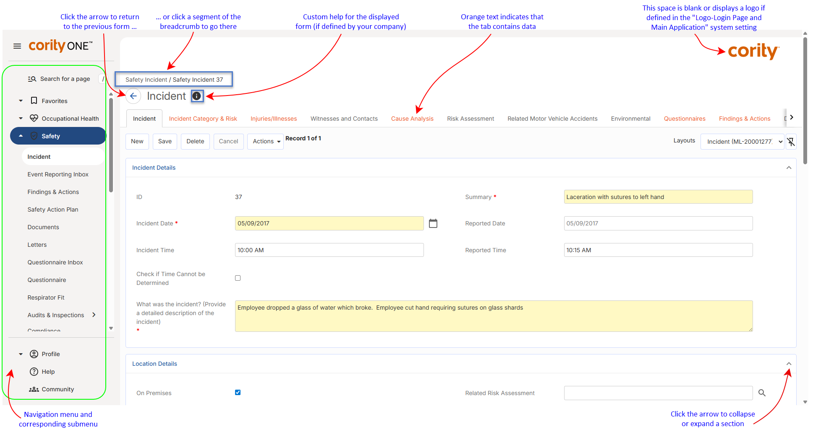

You can run unlimited concurrent sessions of the Cority application unless your administrator has limited this setting.
After logging in to the Cority application, you see the Cority Clouds down the left side and the Employee List open (or whichever option has been specified to open by default using the menu configuration, such as the Dashboard). You may see a message from your Administrator at the bottom; depending on the settings for this message, it may be shown once, remain open at all times, or remain open until you close it.
Cority modules are grouped into Clouds (Occupational Health, Safety, Ergonomics, Industrial Hygiene, Environmental, Business Intelligence, and Training). The most common function, Demographics (the employee list), is in the My Favorites menu. You can configure your My Favorites menu to add other functions that you use frequently. When you click on a Cloud, its menu opens. The right side of the screen will show whatever form is needed for the chosen function or module.
At the top left of each form layout is a breadcrumb trail of the navigation to the layout in the format: <module name> / <record name> / <tab name>. Each location in the breadcrumbs is a clickable link. If you click one of the links, you will be directed to that location. When you close the record or click an item in the left menu, the breadcrumbs will be cleared.
All users must be entered in the Users table (see Setting Up Users) and this is where they are assigned their functional classifications in the application (i.e. Practitioner, Auditor, Safety Representative, Scheduling User, IH User, etc). A user’s functional classifications determine which User picklists they will appear in. For example, all Practitioner picklists will point to the User table but only display users who are classified as a “Practitioner”. The Users table is also where a user can be granted security roles and can be linked to health centers (if they are classified as a Practitioner).

All Cority modules will be displayed, but you will receive a message if you try to access an unlicensed module.